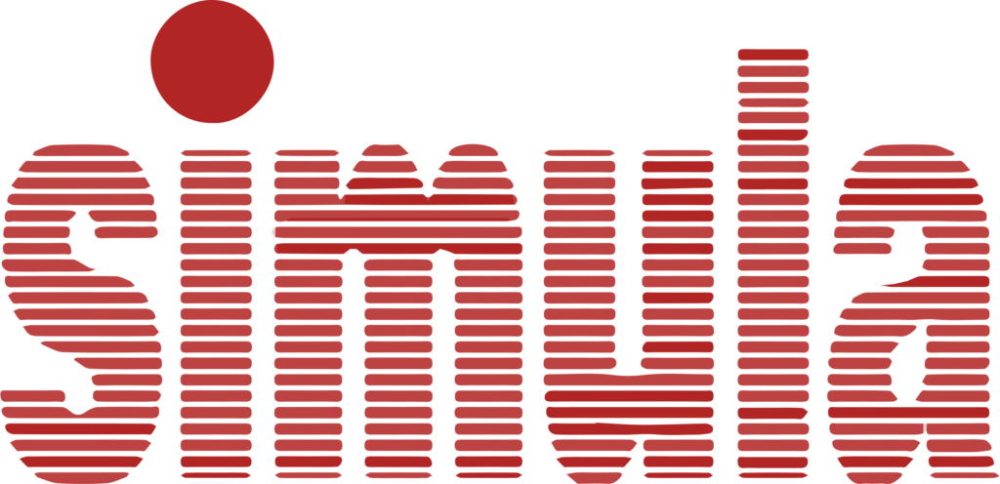
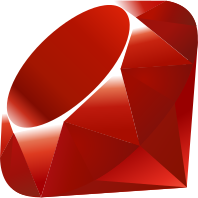

Linha do Tempo da Programação Orientada a Objetos.
1960s
1. Visão de Alan Kay
A orientação a objetos tem sua origem nos anos 60 na Noruega, com Kristen Nygaard e Ole-Johan Dahl, no Centro Norueguês de Computação. Através da linguagem Simula, foram introduzidos os conceitos de classe e herança.
Simula foi influente no desenvolvimento de Smalltalk e, mais tarde na programação orientada a objetos. Ele também ajudou a inspirar o modelo de computação concorrente, embora Simula apenas suporta co-rotinas e não verdadeiros concorrentes.
1970s

Uma década depois, em 1970, temos o surgimento da Smalltalk, criada pelo informático estadunidense Alan Kay. Creditada como a primeira linguagem de programação puramente orientada a objetos.
O Smalltalk tornou-se um padrão para as diversas versões de Smalltalk. Depois disso, a Xerox resolveu criar uma empresa chamada ParcPlace para cuidar do desenvolvimento do Smalltalk, gerando novas versões como ObjectWorks e, posteriormente, VisualWorks.
1980s
Desenvolvida por Bjarne Stroustrup, temos o C++ estendeu o C com recursos de POO, permitindo a criação de software que combinasse a eficiência do C com a flexibilidade da orientação a objetos. O C++ tornou-se amplamente popular e influente no desenvolvimento de software de sistemas e aplicativos.

Referência: https://pt.wikipedia.org/wiki/C%2B%2B
Baseada em C e Smalltalk, criada por Brad Cox e Tom Love na década de 80, temos o Objective-C, que se tornou a linguagem principal para desenvolvimento em macOS e iOS, incorporando POO em uma linguagem de propósito geral.
Brad havia tido seu interesse despertado por problemas de reusabilidade em projeto de software e programação. Para demonstrar que progresso real podia ser feito, Cox provou que componentes de software necessitavam apenas de umas poucas mudanças práticas nas ferramentas existentes.
Referência: https://pt.wikipedia.org/wiki/Objective-C
1990s
Entrando na década de 90, criada por Guido van Rossum (1991), surge o Python, que é uma linguagem de alto nível que combina programação orientada a objetos com outros paradigmas, como a programação funcional e imperativa. Sua simplicidade e flexibilidade tornaram-na muito popular.
A linguagem foi projetada com a filosofia de enfatizar a importância do esforço do programador sobre o esforço computacional. Python prioriza a legibilidade do código sobre a velocidade ou expressividade.

Referência: https://pt.wikipedia.org/wiki/Python
Em 1995, desenvolvida por James Gosling na Sun Microsystems, temos o Java, que é uma das linguagens mais populares do mundo. Ela implementa o modelo "write once, run anywhere", com forte foco em POO e portabilidade. Sua popularidade ajudou a consolidar a POO no desenvolvimento de software corporativo e sistemas distribuídos.
Criada por Yukihiro "Matz" Matsumoto, Ruby é uma linguagem orientada a objetos influenciada por Perl e Smalltalk. Ela foi projetada para ser simples de usar, com uma sintaxe intuitiva e foco na produtividade do desenvolvedor.
Matsumoto pretendia criar uma nova linguagem que balanceava programação funcional com a programação imperativa. Ele afirmou: "Eu queria uma linguagem de script que fosse mais poderosa do que Perl, e mais orientada a objetos do que Python. É por isso que eu decidi desenvolver minha própria linguagem.”
Referência: https://www.ruby-lang.org/en/about/
2000s
E finalmente, desenvolvida pela Microsoft, sob a liderança de Anders Hejlsberg, como parte da plataforma .NET, temos o nascimento do C#, que é uma linguagem orientada a objetos que combina influências do C++, Java e Delphi. Ela foi projetada para ser moderna, segura e eficiente, com forte integração com a plataforma .NET, tornandose uma escolha popular para o desenvolvimento de aplicações empresariais, jogos (via Unity) e aplicações web.